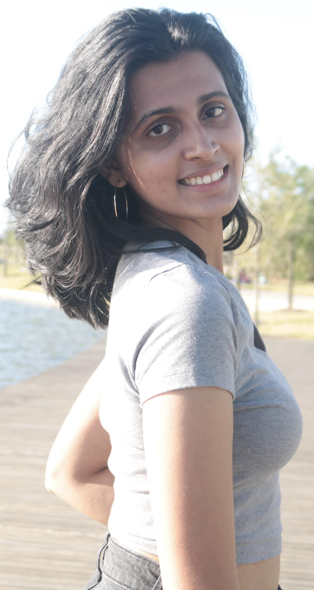

Howdy! My name is Priyanka Rao. I am 21 years old and a senior BA Computing major at Texas A&M University expecting to graduate in May 2023. Welcome to my personal portfolio. Here, I'll be talking a little bit about myself.
I am originally from Portland, Oregon. I moved to Penang, Malaysia when I was 10 years old and lived there for 1.5 years. Then, I moved to Austin in January 2013 and lived there for 6 years.
In June 2019, my family then decided to move again to Folsom, California after I completed my senior year of high school, since my dad got another work project.
Currently, I live between Folsom and College Station, so it's safe to say that I don't have a proper residence as of now.
Some other fun facts about me are that I really enjoy listening to music in my free time and listen to almost any genre, from pop to R&B to alternative rock. My favorite
artist is The Weeknd, as I really vibe with his style of music and even got to see him live in Dallas this summer with two of my friends and had the best night of my life. Other than that, one of my biggest goals after graduating
college is to travel the world; I have been to 4 countries so far: India, Malaysia, Singapore, and Thailand, but I definitely want to see more. In addition, another one of my
biggest goals after graduating college is to get a cat, particularly a bengal cat.
Overall, I look forward to improving my skills as a computer science student and am always seeking more opportunities to grow and develop as a person.
I am both anxious and excited to see what my last year of undergrad has to offer me, as well as where my bachelor's degree will take me.
Technical Projects:
1. Keep Earth Cool
A small project I worked with 4 others on when I attended Girls Who Code in 2017, a summer immersion program for
rising junior and senior high school girls to close the gender gap in computer science. The project featured a website created with HTML and CSS and a mini game made with Scratch to educate and raise awareness on climate change.
2. Detail For Retail
A project I worked on with 4 others when I took CSCE 310 (Database Systems) over the summer. The purpose of this project was to
create a system to manage retail stores and their business-to-business transactions in an efficient manner. Our backend was done with Python (Bootstrap) and
our frontend was done using HTML. We implemented SQLAlchemy to store information in our databases for our entities.
1. Java
2. Python
3. C++
4. PostgreSQL
5. HTML
6. CSS
7. Javascript
Areas of Interest:
My areas of interest in the field are in data engineering and back-end development.
While I have not done much as of now to give back to my community, I definitely plan to change this in the future.
One cause that I am extremely passionate about is feminism or any feminist movement to empower women and girls all over the world.
As a woman in computer science, a heavily male dominated field, I would like to advocate for change so that we can work even further towards closing
the gender gap in the field.
In the meantime, all I can do right now is work on myself and better my skills so that I can be better equipped to give back in the future.